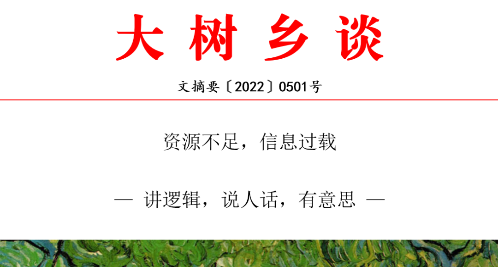

为啥总觉得领导糊涂、决策脱离实际？

被封在家里没事干，虽然说是劳动节，但巴掌大的地方收拾起来也没太大动力，也就是买了几个文件夹，准备把以前马拉松、越野跑的号码簿塑封装订成册，再收拾下书而已。 打发时间还是得靠一些简单的娱乐，最好不咋动脑子的，就想着看看好多年不看的电视剧吧。看了下曾经热门的《琅琊榜》，看了一会就觉得非常离谱，感觉就是一个梦一般的世界，作为主角想要复仇，结果要什么有什么，最离谱的是资金竟然无限，信息还特别精准，这事儿实在让小镇难以入戏。
想来想去还是得去看看费脑子，比如《大明王朝1566》，这确实是一部好片，好到小镇自己都得看人家的解读分析才能搞清楚为啥几个人会这么对话、事情会这么处理，当然这种片子现在很难再拍出来了，毕竟现在的节奏太快了。 电视剧只不过是对现实的一些模拟，还是远远无法还原现实的复杂，毕竟时间有限，一集几十分钟看上去信息很密集，但如此密集的信息在现实里那可能是每分每秒在各个地方都在发生的。 在真实世界里，我们经常会发出这样的诧异：为什么连我都知道的事情，上级领导竟然这么愚蠢，又或者为啥上头竟然看不到很荒唐的现状，“放任”出现这么多的问题？
最近某座城市发生的种种问题，更让这种质疑不断，每天都有几位读者朋友留言问小镇，这座城市到底怎么了，并且做出各种推测。
其实小镇觉得，这都很正常，因为这就是真实的世界，比如有两大难题：一是资源不足，二是信息过载。 第一个问题：资源不足 《大明王朝1566》这部片子，好就好在把“资源不足”这个点演扎实了，全片所有的环节都是围绕资源不足展开，为了解决资源不足问题所以进行改革，而改革又遇到资源不足的问题，又要想办法为改革争取资源，比如最精彩的“改稻为桑”这一环。 起因很简单，财政赤字了，国库没钱了，无论是国家还是嘉靖炼丹，都需要钱，钱怎么来呢？
在农业时代，生产力不高，能够想办法的关键还是在土地上，把粮食作物转为经济作物这是几乎必然的选择，更不要说当时的明朝已经面临世家豪族、皇族供养等吞食大量农田、粮食、财政。 所以江浙一带“改稻为桑”就成为必须要进行的事情。其实这个事并不是坏事，如果纯粹是坏事，也不可能得到明朝堂一致的认可，开展的好当地百姓也会获得很多好处。但是好事也看怎么进行，采取什么方式、什么节奏，不同的过程带来的结果截然不同。 到了这里就有了分歧，比如 谁承担改革代价 。严党直接洪水淹田，逼着老百姓不得不退让，这实际是让老百姓承担代价；而另一派认为一旦这样地方上就乱了，要求顶住，不能让老百姓被逼着把田贱卖，但是代价一定要有人承担，所以就先是富商再是贪官，然后就引发了一系列的争斗。
毕竟谁都清楚代价一定要付，但谁都不想自己承担。
资源是有限的，想要实现的目标远远超过资源的供给，不同人有不同的想法、不同的利益，那就必须得争、得抢，这就有了种种权谋、博弈。 这个片子具体如何其实可以不看，只要记住一个结论：资源不足才是真实世界。 我们看看现实也一样，比如国内，如果资源足够，可以无限满足任何人的需求，那这不就是共产主义社会了吗？但很显然，我们远远达不到，美国也达不到，如果实现了，也就不会有不均衡不充分的问题。
再说国际上，也是一样的，最近围绕俄乌冲突，世界各主要国家还有地区性国家各种动作，说到底大家还是在争夺地球上有限的资源，就连太空也一样，中美欧俄等大国对太空轨道的争夺早就白热化了。 再说企业又或者机关单位，要是资源无限，还用得着发挥“主观能动性”吗？现实中谁不是需要10个人，结果能给4个人就不错了，难道不干了吗？还不是要想办法解决好，否则还想不想保住位子、继续进步了？ 个人不也一样，如果时间无限、体能无限、精力无限，谁还不能成为常人眼中的“天才”“精英”？
不就是因为时间、精力、意志力等等都是有限的，所以才要分配好时间，每天那几个小时的差别不就导致了人与人的区分？ 所以说，正因为现实中受够了资源有限的苦，所以才有了《琅琊榜》这个资源无限的美梦吧。 第二个：信息过载 最近很多读者留言询问一些问题，对某座大城市，也涉及很多城市正在发生的一些事情，当然也有一些公司或者部门的事，具体都不说了，有一个共同的点就是：我都知道这事儿不应该这样，为什么领导（上级）不知道呢？ 在常人想象中，决策所需的信息可能是这个样子：某年某月某日，某某将采取什么行动，影响是什么。
类似这样的消息有那么几条，然后就可以决策了。如果是股市，那可能就是某某股要有啥利好，还有哪几个也有利好，最多围绕一个股有两个不同的消息，诸如此类。 如果现实世界的信息是如此简练，那真是一个幸福的世界啊，就好像《琅琊榜》里的“江左盟”提供的信息，极其精准。 但现实世界中信息实在太庞大了，想想我们每一个人，每天看到的信息有多少？单单新冠病毒到底强还是弱，该“清零”还是“共存”，有谁真的能搞清楚吗？ 这还仅仅是一个理论上很简单很明白的道理，都已经如此难以搞清楚，那再复杂点呢？
比如高考结束了，去哪个城市什么大学读什么专业，毕业了要从事什么工作选什么岗位，工作中要承担具体项目又该怎么揣摩甲方和用户心态搞出合适的方案，等等。 这是多么复杂的事情啊，如果能在错综复杂的信息中，梳理出相对确定性的结论，这本身就是人与人天差地别的关键点。 更何况，如果是一个大组织或者国家的决策者，他每天接收到的经过分析之后的结论性报告更是多如山海。当年特朗普竞选总统，光小镇看过的美国选情预测报告（内参）就有上百份，小镇没看到的肯定要多得多，当然非常荒唐的是，竟然都能“猜”错了也确实不容易。
这还是“二选一”的选情预测，如果是更加复杂的，比如国家外交博弈、经济或者军事竞争呢？那就更加复杂了。每天随便哪位国家领导人收到的内部报告资料都以公斤计算，谁看得过来呢？ 每一份报告都起码是一个人或者一个团队对于大量信息分析之后形成的报告，能到这个层次的逻辑上肯定是自洽的，又该如何分辨、评估？ 更何况，当一个人层级够高之后，就不可能再事无巨细的自己去了解各方面的情况，必须依赖中间层进行信息的汇总、分析、整合成相对结论性的材料，这个过程本身就会出现偏差。
毕竟让决策者看到什么样的信息，本身就有巨大的利益，这个点就不展开了，大家思考下自己是怎么给上级汇报的就应该能明白。 所以《琅琊榜》中提到的“江左盟”最厉害的不是对天下情报了如指掌，关键是怎么在如此庞大的信息中汇总出正确的结论，不得不让小镇怀疑这是一个有“读心”能力的情报机构。 为什么我们常说“多谋善断”，而“善断”比“多谋”更加难得，关键就是信息很多时候不是太少，而是太多。 我们现在处于信息爆炸的时代，获取信息确实太容易了，但不要因此就觉得古人没啥了不起，得好好想想我们获取信息是因为我们自己够强还是时代的优势，获取信息之后又是否具有勘破迷雾、抓住本质的能力？
毛主席在20岁就能够根据自己的调研深刻的剖析中国，他得到的信息总量其实并不多，我们现在有很多研究者获得的信息几十倍上百倍于毛主席，关键是那套认知体系。 解决资源不足和信息过载，才是现实世界人与人根本差别。
其他文章推荐
■ 中央部委公务员的待遇与发展
如果喜欢，还请点赞、“在看”和关注吧 欢迎分享，让更多人发现“大树乡谈”